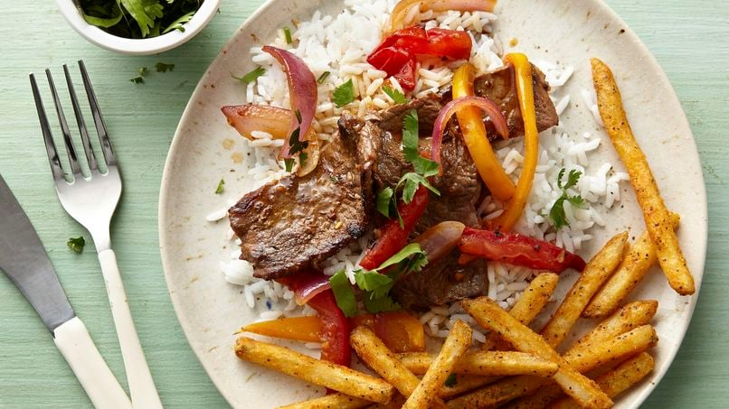

Lomo Saltado Recipe

Description
Lomo Saltado is a Peruvian dish that is inspired from Asian cuisine
It is a staple in pretty much all Peruvian restaurants
Ingredients
- Tomatoes (1)
- Potatoes (1)
- Beef (250g)
- Onions (preferably purple, 1)
- Soy Sauce (both dark and normal)
- Salt, pepper
- Rice
- Chicken stock
- Garlic (1)
- Cooking wine
- Corn Starch (1 teaspoon)
- Olive oil
Steps
- Defrost the beef the night before
- Cut potatoes into fry shapes
- Fry potatoes
- Remove potatoes
- Cut beef into strips or cubes, preferably against the lines
- Mince garlic
- Season beef with minced garlic, 1/2 cap of cooking wine, 1 tbsp olive oil, 1 tbsp of corn starch, pepper
- Cut onions into strips
- Peel and cut tomatoes into strips
- Fry beef with olive oil until it turns brown
- Remove beef
- Fry tomatoes and onions
- Add 1/2 cup of water
- Add 1 1/2 tbsp of normal soy sauce
- Add 1/2 tbsp of dark soy sauce
- Add 1/2 tbsp of salt
- Add 1/2 tbsp of chicken stock
- Stir
- Add fries and beef to the mix
- Take out of fire and turn off stove